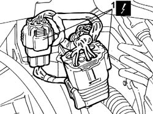
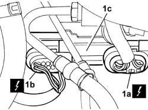
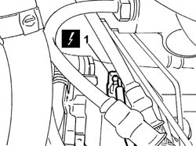
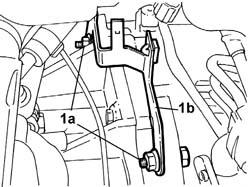
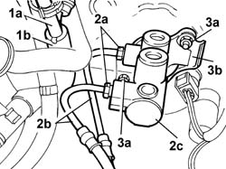
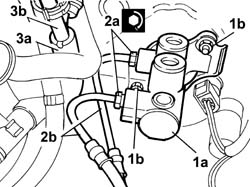

5580A78 Braking system check control unit mounting bracket - R.R.
- Path
- Procedures > 55 ELECTRICAL EQUIPMENT > 5580 SPECIAL ACCESSORIES > 5580A CRUISE CONTROL SYSTEM > 5580A78 Braking system check control unit mounting bracket - R.R.
- Kind
- repair procedure (removal / refitting; the operation number is the code)
- Applies to
- engines: 3.0 V6, 3.2 V6; all production periods
- Interactive page
- https://sloeber94.github.io/elrnDB-lThss/en/#/193020
Applies to: engines: 3.0 V6, 3.2 V6; all production periods
 Removing
Removing
 Refitting
Refitting- Open the boot, remove the cover on the left hand side and disconnect the negative battery lead.
See in Op. 1048A28 vacuum air circuit resonator pipe - r+r
1. Open the retaining bands and disconnect the three gearbox main wiring connectors.
 | Description | Connector |
|---|---|---|
1 | Automatic transmission solenoid valves | L050A |
| Description | Connector |
|---|---|---|
1 | Automatic transmission solenoid valves | L050B |
| Description | Connector |
|---|---|---|
1 | Automatic transmission solenoid valves | L050C |

Applies to: engines: 3.0 V6, 3.2 V6; all production periods
1. Disconnect the connectors (1a) and (1b) for the braking system check control unit (1c) and remove the actual control unit.
| Description | Connector |
|---|---|---|
1a | Braking system check control unit (NBA brake assistance) | M052 |
| Description | Connector |
|---|---|---|
1b | Braking system check control unit (NBA brake assistance) | M052 |

Applies to: engines: 3.0 V6, 3.2 V6; all production periods
1. Disconnect the connector for the gearbox output speed sensor

Applies to: engines: 3.0 V6, 3.2 V6; all production periods
1. Undo the two fixing nuts (1a) and remove the mounting bracket (1b) for the gearbox wiring and the starter motor lead.

Applies to: engines: 3.0 V6, 3.2 V6; all production periods
- Position a suitable container for collecting the brake fluid
See in Op. 3330C30 brake fluid reservoir - r + r and wash inside
1. Disconnect the vacuum increase valve (1a) from the lower pipes (1b) to the brake servo and the intake hose.
2. Undo the connectors (2a) for the rigid pipes (2b) between the brake pump (2c) and the ABS control unit and remove them.
3. Undo the two nuts (3a) fixing the master cylinder and the mounting bracket (3b) for the braking system check control unit and remove the control unit.

Applies to: engines: 3.0 V6, 3.2 V6; all production periods
Refitting
Removing1. Position the master cylinder (1a) and the control unit mounting bracket and tighten the fixing nuts (1c).
2. Position the rigid pipes (2b) between the ABS control unit and the brake pump tightening the connectors (2a) to the recommended torque.
 | Value - daNm | Fastening | Component | Ø |
|---|---|---|---|---|
2a | 1.4 | Connector | PIPE FROM PUMP TO HYDRAULIC CONTROL UNIT | M10 |
3. Connect the lower pipes (3a) for the vacuum increase valve (3b).

Applies to: engines: 3.0 V6, 3.2 V6; all production periods
- Position the mounting bracket for the gearbox wiring and the starter motor lead and tighten the two fixing nuts.
- Connect the connector for the gearbox output speed sensor
- Position the braking system check control unit and connect the control unit connectors.
| Description | Connector |
|---|---|---|
. | Braking system check control unit (NBA brake assistance) | M052 |
| Description | Connector |
|---|---|---|
. | Braking system check control unit (NBA brake assistance) | M052 |
- Connect the three main gearbox wiring connectors, then close the retaining band.
| Description | Connector |
|---|---|---|
. | Automatic transmission solenoid valves | L050A |
| Description | Connector |
|---|---|---|
. | Automatic transmission solenoid valves | L050B |
| Description | Connector |
|---|---|---|
. | Automatic transmission solenoid valves | L050C |
See in Op. 1048A28 vacuum air circuit resonator pipe - r+r
See in Op. 0010T64 Brake and/or clutch fluid - Check level and top up, if necessary
- [0010T64]
- Connect the negative battery terminal and position the cover on the left hand side of the luggage compartment.